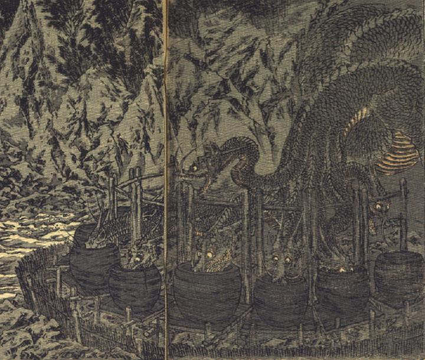

八頭の大蛇。首のところで頭が8つに分かれた龍。それぞれの頭には、2本角が生え、目玉は丸く、大きく裂けた口に牙が並んでいる。全身は鱗に覆われている。山肌を這い降りてきて、輪になって置かれている大きな8つの器に1つ1つ頭を突っ込み、その中身を飲んでいる。
著作者：J.Dautremer／出典：親書誌：U426_nichibunken_0117：Le serpent à huit têtes／日付：2006／資源識別子：U426_nichibunken_0117_0002_0000
Copyright (c)2010- International Research Center for Japanese Studies, Kyoto, Japan. All rights reserved.